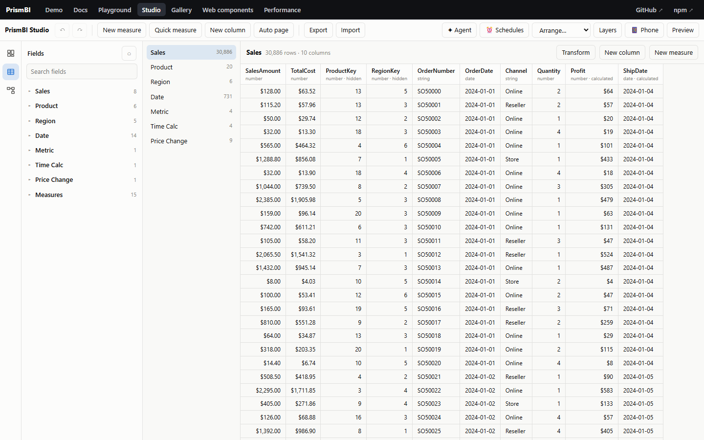

Data modeling
Tables #

model.addTable(name, rows, schema?) // rows: object array
model.addTable(name, DataTable.fromColumns(name, cols)) // fast path for column arrays
model.refreshTable(name, rows) // replace data, keep calculated columns
model.removeTable(name)schema is a map of column name to ColumnSchema:
| Option | Meaning |
|---|---|
type | 'number' | 'string' | 'boolean' | 'date'. Inferred when omitted |
format | Default format string, e.g. '$#,0.00', '0.0%', 'MMM yyyy' |
hidden | Hidden from the field list (keys, helper columns) |
sortBy | Sort this column by another column, e.g. Month by MonthNumber |
description | Shown in field lists |
Blank cells (null, undefined, '') become BLANK.
Relationships #

model.addRelationship({ from: 'Sales[ProductId]', to: 'Products[Id]' });-
fromis the many side andtois the one side. Thetocolumn must hold unique values, and PrismBI checks this. -
Filters flow from one to many, so a filter on
Products[Category]narrowsSales. A filter onSalesdoes not narrowProducts. Chains work, e.g.Sales → Products → Subcategory → Category(snowflake). -
Two-way filtering (
crossFilter: 'both'), many-to-many (cardinality: 'manyToMany') and inactive relationships (active: falseplusUSERELATIONSHIP) are covered in advanced modeling.
Measures #
model.addMeasure('Total Sales', 'SUM(Sales[Amount])', { format: '$#,0', folder: 'Sales', description: '...' });
model.addMeasure({ name: 'Margin %', expression: 'DIVIDE([Profit], [Total Sales])', format: '0.0%' });
model.removeMeasure('Margin %');Measures are evaluated in the filter context of wherever they are used: a visual's grouping, slicers, page filters, and so on. They can reference other measures as [Name]. Results are memoised per filter context, and circular references are reported.
Calculated columns #
model.addCalculatedColumn('Sales', 'Profit', 'Sales[Amount] - Sales[Cost]', { format: '$#,0' });
model.addCalculatedColumn('Sales', 'Category', 'RELATED(Products[Category])');
model.addCalculatedColumn('Products', 'Lifetime Sales', '[Total Sales]'); // context transition per rowThese are evaluated once per row, in row context, and stored like any other column.
Date tables #
model.addDateTable('Date', '2024-01-01', '2025-12-31', { fiscalYearStartMonth: 7, weekStart: 1 });Columns: Date, Year, Quarter (Q1…), YearQuarter, Month (January…), MonthShort, MonthNumber, MonthYear (Jan 2024), Day, DayOfWeek, DayOfWeekNumber, WeekOfYear, IsWeekend, FiscalYear, FiscalQuarter, plus hidden sort keys. Text columns sort chronologically.
Relate the date table to your fact date column. Time-intelligence functions then work (see expressions). For hierarchies, use several fields in a drillable role, e.g. category: ['Date[Year]', 'Date[Quarter]', 'Date[Month]'].
Querying directly #
Visuals use model.query(), and so can you (APIs, exports, tests):
const result = model.query({
groupBy: ['Products[Category]', 'Date[Year]'],
values: ['Total Sales', { field: 'Sales[Qty]', aggregation: 'avg' }, { expression: '[Total Sales] * 1.1', name: 'Forecast' }],
filters: [{ target: 'Region[Name]', op: 'in', values: ['North', 'West'] }],
orderBy: [{ field: 'Total Sales', direction: 'desc' }],
top: 10,
totals: true,
});
// result.rows: [{ keys: ['Bikes', 2025], values: [6000, 1.2, 6600] }, ...]
// result.totals: grand totals evaluated in the unfiltered-by-group contextQuerySpec field | Meaning |
|---|---|
groupBy | Column refs. Only combinations with data are returned (auto-exist) |
values | Measures, Table[Column] with an implicit aggregation, or { expression } |
filters | FilterSpec[] (see interactions) |
highlight | Extra filters. Each row also gets highlights[] evaluated with them |
orderBy, top | Sort keys (group ref, value name, { value: i } or { group: i }) and a row limit |
totals | Also return grand totals |
includeEmpty | Keep rows where every value is blank |
Implicit aggregations: sum (the default for numbers), count (the default for text), avg, min, max, median, distinctCount, countRows, first, last.
More modeling #
Calculated tables, calculation groups, field and what-if parameters, hierarchies, perspectives and row-level security are covered in advanced modeling.
Field list and metadata #
model.fields(); // [{ kind: 'column' | 'measure', table, name, ref, type, format, hidden }]
model.toJSON(); // tables/columns/types, relationships, measures (no row data)
model.onChange(() => ...);Try it #
return model.query({
groupBy: ['Region[Group]'],
values: ['Total Sales', 'Orders', 'Margin %'],
filters: [{ target: 'Date[Year]', op: 'eq', value: 2025 }],
orderBy: [{ field: 'Total Sales', direction: 'desc' }],
totals: true,
});On the docs site (npm run docs), ▶ Run in playground opens it in an editor next to its output.